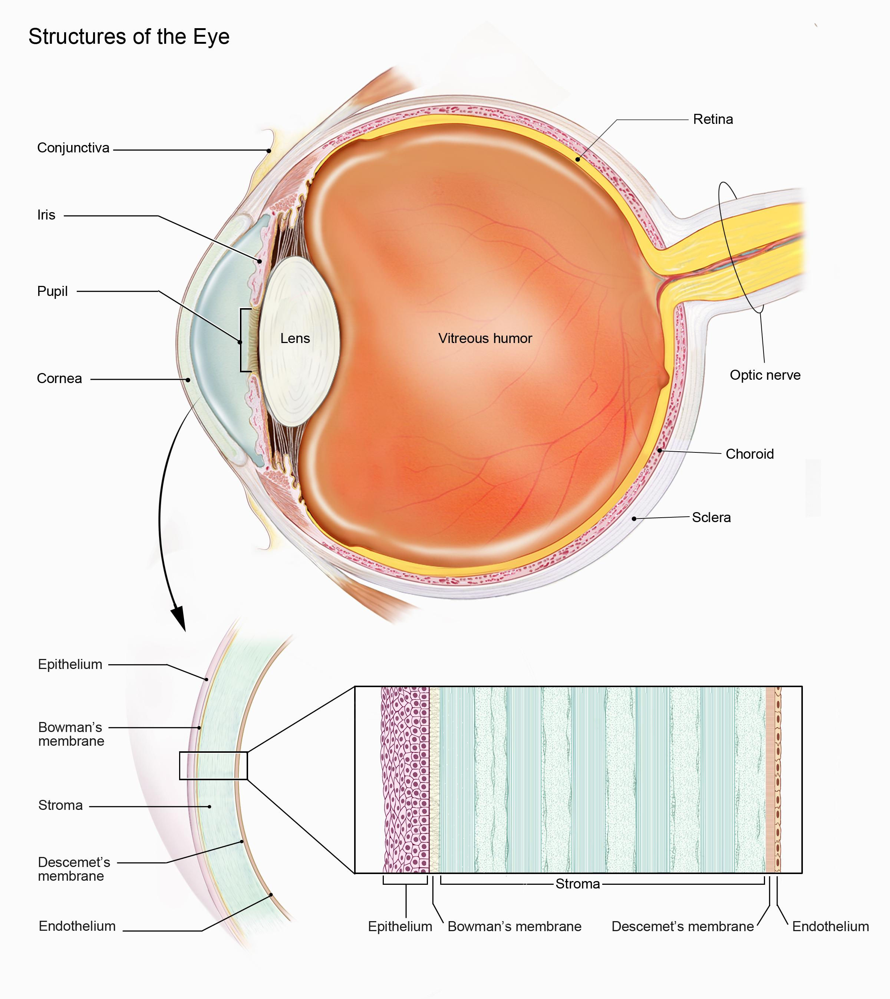
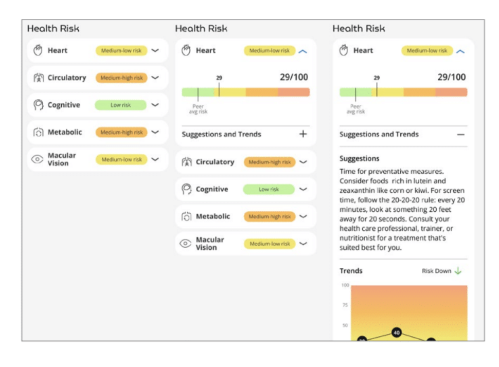
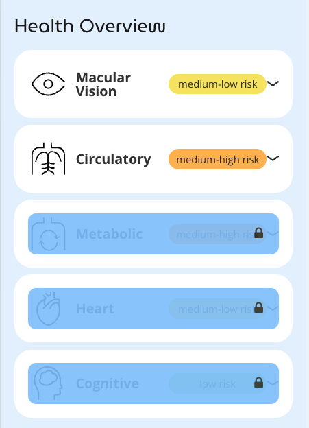

2 The Science of Photobiomodulation
How Red Light Therapy Works at the Cellular Level
Red light therapy, also known as photobiomodulation (PBM), represents a fascinating intersection of physics, biology, and medicine. This chapter delves into the fundamental mechanisms through which specific wavelengths of red and near-infrared light influence cellular function and promote healing throughout the body.
At its core, PBM works primarily through interaction with cytochrome c oxidase, a photoreceptive enzyme in the mitochondrial respiratory chain. When specific wavelengths (typically 630-670nm and 810-850nm) reach this enzyme, they enhance ATP production—the cellular energy currency essential for repair and regeneration. This process also triggers beneficial secondary effects, including reduced oxidative stress, modulated inflammation, and improved intercellular signaling.
We’ll examine the “biphasic dose response” principle that governs effective treatment: how too little energy yields insufficient effects while too much can inhibit beneficial responses. Understanding this delicate balance is crucial for developing optimized protocols based on client-specific needs identified through retinal imaging. The chapter also explores how light therapy influences genetic expression, activating genes associated with tissue repair and cellular protection while downregulating those involved in inflammation and oxidative damage. By understanding these molecular pathways, practitioners can better predict therapeutic responses and tailor interventions to address specific conditions revealed through comprehensive retinal assessment.
2.1 The Retina: A Unique Microcosm of the Body
The human eye, an intricate organ of visual perception, is often celebrated for its capacity to perceive the world around us. Yet, this remarkable organ holds far greater potential than solely enabling sight. It is a complex, living tissue – a veritable microcosm of the human body, with its own unique vascular and neural structure that provides a direct, non-invasive window into one’s overall health.
2.1.1 Basic Structure and Function
The retina, located at the back of the eye, is more than just a light-sensing tissue; it’s an extraordinary extension of the brain. Its formation during embryological development is closely intertwined with the central nervous system. Both the retina and the brain arise from the neural tube during embryogenesis, which results in shared biological pathways and common cell types. This close connection means that the retina is not merely a passive receiver of visual information, but an active extension of the central nervous system.
Structurally, the retina is a multi-layered membrane containing photoreceptor cells, interneurons, ganglion cells, and glial cells. These neurons are responsible for translating light signals into electrical impulses that are sent to the brain for processing. But perhaps more importantly for this discussion, the retina has an exquisite and highly vascularized network of microvessels. The retinal microvasculature, consisting of arterioles, capillaries, and venules, facilitates the delivery of nutrients and oxygen, essential for the high metabolic activity of retinal cells, and removal of metabolic waste products.

2.2 Fundus Photography: Seeing Beyond the Eye
The emergence of non-mydriatic fundus photography represents a leap forward in our ability to assess the retina and, consequently, the general health of our patients. This technique employs digital cameras and specialized optics to capture detailed, high-resolution images of the retina—the light-sensitive tissue lining the back of the eye—without the need for pupil-dilating eye drops. This non-invasive method opens up the possibility of large-scale retinal screening that was not previously feasible with traditional ophthalmoscopy.
2.2.1 Understanding the Technology
The technology behind fundus photography is straightforward: a light source illuminates the retina and the reflected image is captured by a high-resolution digital sensor. Most modern fundus cameras have advanced optics to reduce glare and distortion, resulting in exceptionally clear images of the retinal vasculature, optic disc, macula and other structures. The images provide a broad overview of the retinal structures including the microvasculature, which can then be digitally assessed for any subtle variations which might not be apparent to the naked eye.
The ease of image acquisition also helps to facilitate the development of teleretinal services, with trained personnel in remote areas able to use the cameras and share the data with remote clinicians. Furthermore, automated data analysis can be used to extract and quantify information about the retinal structure and microvasculature, paving the way for mass screening that would have been impossible previously.
2.2.2 Traditional Ophthalmoscopy: Limitations and New Perspectives
For over 150 years, ophthalmoscopy, the direct examination of the retina using an ophthalmoscope, has been a fundamental tool for the diagnosis and management of eye diseases. This technique, developed in the mid-19th century, allows a clinician to visualize the optic disc, retina, and retinal vasculature by shining a light through the pupil. While it offers a direct view of the retina, this technique has several limitations that have become more apparent as technology has evolved.
One of the major limitations of traditional ophthalmoscopy is that it requires a high degree of skill and training to interpret findings accurately. The learning curve to become proficient at interpreting what is seen is quite steep, and inter-observer variability can be quite high. This is due to the variability of the quality of visualization as well as the subjectivity that comes into play when analyzing the complex patterns of the retina.
Another important limitation is its inability to digitally capture and store retinal images for further analysis or review. Ophthalmoscopy provides only a fleeting visualization with no record or digital archive of findings, which means changes or subtle anomalies can be difficult to track over time. Furthermore, it is difficult to share the image with other clinicians for consultation and a second opinion.
2.2.3 The AI Advantage
The benefits of high-resolution fundus photography are further enhanced by the recent advancements in artificial intelligence. By coupling fundus photos with AI, new analysis parameters have become possible. A deep-learning approach can make precise calculations of vessel diameters and detect minute variations in retinal structures, which would take much longer for a skilled ophthalmologist to assess.
AI algorithms are rapidly being refined and their ability to analyze retinal images for signs of systemic diseases such as heart disease, diabetes, and neurological conditions are promising. These systems can:
- Analyze vessel caliber and patterns
- Detect subtle changes in tissue structure
- Identify early signs of systemic conditions
- Track changes over time with perfect consistency
- Compare findings across large populations
2.2.4 Future Implications
The integration of fundus photography with artificial intelligence represents more than just a technological advancement—it signifies a paradigm shift in how we approach health assessment. This combination offers several key advantages:
- Early Detection: Subtle changes can be identified before traditional symptoms appear
- Objective Analysis: AI-driven assessment reduces subjective interpretation
- Longitudinal Tracking: Digital storage enables precise monitoring of changes over time
- Enhanced Accessibility: Non-invasive nature allows for widespread screening
- Predictive Potential: Pattern recognition may enable early risk assessment
As we move forward, the continued refinement of both imaging technology and AI analysis promises to further expand our understanding of the relationship between retinal health and systemic conditions. This evolution may lead to new preventive strategies and more personalized approaches to health management.
2.3 Deep Learning & Artificial Intelligence
Imagine having a friend who could look at millions of photographs in a single day, remembering every tiny detail and spotting patterns that even the most skilled doctors might miss. That’s exactly what we’ve created with deep learning and artificial intelligence in retinal imaging! This breakthrough technology is transforming how we understand the fascinating connection between our eyes and overall health.
2.3.1 The Magic of Deep Learning
Think about how you learned to recognize cats and dogs when you were young. Nobody gave you a rulebook with exact measurements of ear shapes or tail lengths. Instead, you saw lots of examples, and your brain gradually learned to spot the patterns that make a cat a cat and a dog a dog. Deep learning works in amazingly similar ways!
When we talk about “deep learning,” we’re describing computer systems that learn from examples, just like your brain did. But here’s the incredible part – while you might have seen hundreds of cats and dogs growing up, our AI systems can analyze millions of retinal images, learning to spot patterns that reveal hidden clues about our health.
The human eye is remarkable in its ability to discern incredibly subtle patterns. However, even the most skilled human eye can’t compete with the power of a computer when it comes to quickly processing and analyzing vast amounts of complex information. This is where deep learning and artificial intelligence become invaluable tools in the realm of retinal imaging.
2.3.2 How AI Learns to See
Instead of being programmed with strict rules like “if you see this exact pattern, it means that,” our AI systems learn through experience. We show them hundreds of thousands of retinal images, along with information about the health of the people those eyes belong to. Over time, the system learns to recognize subtle patterns:
- Tiny changes in blood vessel shapes
- Slight variations in tissue color
- Complex patterns in how blood vessels branch
- Subtle differences in the thickness of various retinal layers
What makes this particularly exciting is that our AI can spot patterns that human doctors never even knew to look for! It’s like having a super-powered microscope that not only magnifies what we can see but reveals entirely new ways of looking at the eye.
2.3.3 From Images to Insights
When you look into an Opticare AI camera, here’s what happens in just a few seconds:
- The camera captures a high-resolution image of your retina
- The AI system analyzes every pixel of that image
- The deep learning model compares your image to millions it has studied before
- Patterns in your retinal image are matched with various health indicators
- The system generates insights about your overall health
This process, which would take a human doctor hours or even days to complete (if they could do it at all), happens almost instantly. It’s like having thousands of the world’s best eye doctors examining your retina simultaneously, each contributing their knowledge to understand what your eyes reveal about your health.
2.3.4 Beyond Human Vision
The power of this technology goes far beyond what human eyes can see. Our deep learning systems can:
- Detect blood vessel changes smaller than a human hair
- Identify patterns across thousands of different features simultaneously
- Track subtle changes over time with perfect consistency
- Compare your results with millions of other cases instantly
- Predict potential health changes before they become visible to human observers
2.3.5 A Learning System That Never Sleeps
One of the most exciting aspects of our AI system is that it keeps getting smarter. Every new image it analyzes adds to its understanding. This continuous learning means:
- The system becomes more accurate over time
- New patterns and correlations are constantly discovered
- Our understanding of eye-health connections keeps growing
- The technology becomes more precise in its predictions
- We’re constantly uncovering new ways the eye reflects our health
2.3.6 The Future is Now
Think about this: every time someone has their retina photographed with our system, they’re not just learning about their own health – they’re contributing to a growing body of knowledge that helps everyone. It’s like having a worldwide health research project that never stops, constantly discovering new ways to keep people healthy.
The combination of retinal imaging and AI isn’t just a new way to look at eyes – it’s a revolution in how we understand human health. Through the window of the eye, we’re uncovering health insights that would have seemed like science fiction just a few years ago. And the most exciting part? We’re still just at the beginning of understanding what this technology can do!
2.4 Amazing Health Discoveries Through the Window of the Eye
Imagine if you could peek inside your body and see how healthy your heart is, how well your brain is working, or whether you might be at risk for diabetes - all without a single needle prick or medical test! This isn’t science fiction - it’s exactly what we can do by looking at the incredible patterns in your eyes. Let’s explore some of the amazing things we can learn just by taking a quick picture of your retina!
2.4.1 Your Heart’s Story in Your Eyes
You might not realize it, but your eyes contain tiny blood vessels that work just like the ones in your heart! Think of these vessels as tiny highways that carry blood throughout your body. When we look at these miniature highways in your eyes, we can learn amazing things about your heart health:
- The twists and turns of these tiny vessels can tell us about blood pressure
- The width of these vessels gives clues about heart health
- Changes in how blood flows through them might warn us about future heart problems
- The patterns they form can predict risk years before traditional tests
It’s like having a crystal ball that lets us peek into your heart’s future, all through a simple photograph of your eye!
2.4.2 Your Brain’s Secret Window
Remember how we learned that the retina is actually a piece of your brain that we can see? This makes it incredibly special! Scientists have discovered that changes in your retina can tell us fascinating things about your brain:
- The thickness of certain layers in your retina might indicate brain health
- Patterns in the neural tissue can reflect memory and thinking abilities
- Changes in tiny blood vessels might signal early warning signs of brain aging
- The overall health of your retina often mirrors the health of your brain
It’s like having a window directly into your brain, helping us understand how to keep your mind sharp and healthy!
2.4.3 The Sugar Story: Diabetes Detection
One of the most incredible things we’ve discovered is how early signs of diabetes show up in our eyes. High blood sugar affects the tiny blood vessels in your retina before you feel any symptoms:
- Tiny bulges in blood vessels (called microaneurysms) might appear
- The pattern of blood vessel branching might change
- Small amounts of fluid might leak into the retina
- The overall health of the blood vessels might show early warning signs
By spotting these changes early, we can help people make healthy changes before diabetes even develops - how amazing is that?
2.4.4 Your Body’s Age vs. Your Eye’s Age
Here’s something truly fascinating - your eyes can tell us about how quickly or slowly your body is aging! Scientists have discovered that by looking at patterns in the retina, we can calculate something called your “retinal age”:
- Some people’s eyes look younger than their actual age (that’s good!)
- Others might show signs of faster aging (giving us a chance to make healthy changes)
- The patterns we see can help predict how well someone might age in the future
- Changes in these patterns can show us if healthy habits are working
It’s like having a time machine that lets us peek into how well your body is aging!
2.4.5 The Inflammation Detective
Your eyes can even tell us about inflammation in your body - that’s when your immune system is extra active and might be causing problems:
- Changes in blood vessel color might indicate inflammation
- Swelling patterns in the retina can reflect body-wide inflammation
- The appearance of certain spots or marks might signal immune system activity
- Overall retinal health often reflects systemic inflammation levels
2.4.6 Real-Time Health Monitoring
One of the most exciting things about this technology is that we can track changes over time:
- Each new picture adds to your personal health story
- We can see if healthy changes you’re making are working
- Early warning signs can be caught and addressed quickly
- Your eye health record becomes like a movie of your overall health
2.4.7 What This Means for You
All of this incredible science means we can: - Catch potential health issues earlier than ever before - Track how well health improvements are working - Understand your personal health patterns better - Make more informed decisions about your health
And the best part? It’s all from a quick, painless photograph of your eye that takes just seconds to capture! No needles, no discomfort, no waiting - just instant insights into your health through the amazing window of your eyes.
2.4.8 The Future is Even More Exciting
Scientists are discovering new things about what our eyes can tell us almost every day! As our AI systems learn from more and more retinal images, we’re constantly uncovering new patterns and connections. It’s like having a health detective that gets smarter every single day, working tirelessly to help us understand how to stay healthy and catch problems early.
Just imagine - every time someone gets their retina photographed, they’re not just learning about their own health, they’re helping our AI system learn more about human health in general. It’s like being part of a worldwide science project that never ends, always discovering new ways to keep people healthy!
2.5 A Revolutionary Window into Human Health
The convergence of advanced retinal imaging and peptide therapeutics represents one of the most exciting developments in modern medicine. Imagine being able to watch, in real-time, as therapeutic interventions work their magic at the cellular level - not through invasive procedures or complex laboratory tests, but simply by looking into someone’s eyes. This isn’t science fiction; it’s happening right now, and it’s revolutionizing how we think about personalized medicine.
2.5.1 The Brilliant Biology of Peptides
At their core, peptides are remarkable biological molecules - short chains of amino acids that serve as the body’s master regulators. Think of them as the body’s sophisticated communication system, carrying precisely coded messages that trigger specific biological responses. What makes peptides particularly fascinating is their incredible specificity; unlike broader therapeutic approaches, peptides can target exact biological processes with remarkable precision.
But here’s where things get really interesting: through advanced retinal imaging, we can actually observe how these molecular messengers influence our body’s systems. The retina, with its intricate network of blood vessels and neural tissue, becomes our window into this microscopic world of biological communication.
2.5.2 Watching Biology in Action
When we combine high-resolution fundus photography with artificial intelligence analysis, we can observe several remarkable changes in real-time:
Vascular Responses
- Blood vessels adapting their diameter in response to therapeutic signals
- Changes in blood flow patterns revealing improved circulation
- Vessel wall characteristics showing reduced inflammation
- New vessel formation or regression depending on therapeutic goals
Neural Tissue Dynamics
- Subtle changes in retinal layer thickness indicating neural health
- Improvements in nerve fiber organization
- Enhanced tissue oxygenation patterns
- Reduced signs of oxidative stress
What makes this particularly exciting is that these changes often appear well before traditional diagnostic tests might show improvements. It’s like having a preview of how well a treatment is working, allowing us to fine-tune therapeutic approaches with unprecedented precision.
2.5.3 The Power of Personalized Observation
One of the most revolutionary aspects of this technology is its ability to show us how individuals respond to treatments in their own unique ways. Just as every person has a unique fingerprint, each individual’s retinal patterns and responses to therapy are distinctly their own. This observation capability allows us to:
- Track individual response patterns
- Adjust dosing based on actual biological feedback
- Identify optimal treatment timing
- Recognize early signs of exceptional response or potential issues
The implications are profound - we’re moving from a one-size-fits-all approach to truly personalized medicine, guided by direct observation of biological responses.
2.5.4 Real-Time Feedback Loops
Perhaps one of the most exciting aspects of this technology is the creation of rapid feedback loops. Instead of waiting weeks or months to know if a treatment is working, we can often see changes beginning to manifest within days or even hours. This rapid feedback enables:
- Dynamic dose adjustment based on actual response
- Early identification of optimal treatment combinations
- Quick recognition of any adverse reactions
- Continuous optimization of therapeutic approaches
It’s like having a high-definition monitor for your body’s response to treatment, offering insights that were previously impossible to obtain without invasive procedures.
2.5.5 The Future of Therapeutic Monitoring
As our AI systems continue to learn from millions of retinal images, we’re discovering new patterns and correlations almost daily. This constant evolution of our understanding is opening up exciting possibilities:
- Predictive modeling of treatment responses
- Earlier intervention opportunities
- More precise therapeutic targeting
- Enhanced understanding of biological variation
The integration of this technology with other advancing fields - genomics, metabolomics, and advanced biosensors - suggests we’re just scratching the surface of what’s possible.
2.5.6 Why This Matters
This technology represents more than just a new way to monitor treatments - it’s fundamentally changing our understanding of how individuals respond to therapeutic interventions. By providing a direct window into the body’s response to peptides and other treatments, we’re gaining insights that are reshaping our approach to medicine.
The ability to watch biological processes unfold in real-time through retinal imaging is democratizing access to sophisticated health monitoring. It’s making the invisible visible, allowing us to optimize treatments with a precision that was previously unimaginable.
2.5.7 Looking Ahead
As we continue to refine these technologies and deepen our understanding of what retinal patterns can tell us, we’re moving toward a future where therapeutic interventions can be continuously optimized for each individual. This isn’t just evolution in medical technology - it’s a revolution in how we understand and monitor human health.
The convergence of peptide therapeutics and advanced retinal imaging isn’t just showing us new ways to monitor treatment - it’s opening up entirely new possibilities for understanding human biology. Every new image, every observed response, adds to our collective knowledge and brings us closer to truly personalized medicine.
2.6 Practical Implementation: From Theory to Revolutionary Practice
The transition from theoretical understanding to practical application represents one of the most fascinating aspects of retinal imaging technology. As we stand at the intersection of artificial intelligence, advanced optics, and biological insight, we’re witnessing the emergence of tools that transform how we approach health assessment and monitoring.
2.6.1 The Evolution of Clinical Practice
Remember the early days of medical imaging? Practitioners needed darkened rooms, specialized training, and complex equipment just to get a basic glimpse inside the human body. Now, we’re entering an era where sophisticated health insights are available through a device no larger than a professional camera. This transformation isn’t just about convenience – it’s revolutionizing our entire approach to health assessment.
The Opticare AI camera exemplifies this evolution. Weighing just 2 kilograms and requiring minimal setup, it brings laboratory-grade analysis into practically any clinical setting. But what makes this truly remarkable isn’t just the hardware – it’s the seamless integration of advanced AI that turns each image into a wealth of health insights.
2.6.2 Breaking Down the Technology
Let’s explore what makes this system so revolutionary:
- Advanced Optical Systems
- Non-mydriatic imaging (no need for eye drops!)
- High-resolution sensors capturing microscopic details
- Sophisticated light management for optimal imaging
- Automated focus and alignment systems
- Real-Time Processing
- Instant image quality assessment
- Immediate analysis of retinal features
- Dynamic feedback for optimal capture
- Continuous learning from each new image
- AI-Enhanced Analysis
- Pattern recognition across millions of data points
- Comparison with vast databases of known conditions
- Predictive modeling of health trajectories
- Personalized risk assessment and monitoring
2.6.3 The Integration Revolution
What’s particularly exciting is how this technology is transforming clinical workflows. Imagine walking into a wellness center and receiving comprehensive health insights in minutes, not days or weeks. The process flows something like this:
- Quick, comfortable imaging session (less than 5 minutes)
- Immediate AI analysis of retinal patterns
- Generation of detailed health insights
- Interactive review of findings
- Development of personalized health strategies
This isn’t just faster – it’s fundamentally more informative. The AI system identifies patterns and correlations that might take human experts hours or days to analyze, if they could spot them at all.
2.6.4 Beyond Traditional Boundaries
The implications of this technology extend far beyond traditional medical settings. Consider these revolutionary applications:
- Wellness Centers: Comprehensive health screening without invasive tests
- Mobile Health Units: Bringing advanced diagnostics to remote areas
- Corporate Health Programs: Regular monitoring for early intervention
- Research Studies: Massive data collection with minimal participant burden
Each application opens new possibilities for understanding and monitoring human health, creating opportunities that were unimaginable just a few years ago.
2.6.5 The Learning System
One of the most fascinating aspects of this technology is its continuous evolution. Every image captured adds to the system’s understanding, creating a virtuous cycle of improvement:
- Pattern recognition becomes more refined
- New correlations emerge from the data
- Predictive capabilities improve
- Understanding of human health deepens
It’s like having a scientific research project that never ends, constantly discovering new insights about human health through the window of the eye.
2.6.6 Future Horizons
As we look toward the future, several exciting developments are on the horizon:
- Enhanced Integration
- Seamless connection with other health monitoring systems
- Real-time data sharing with healthcare providers
- Integration with personal health tracking devices
- Advanced pattern recognition across multiple data sources
- Expanded Capabilities
- New biomarkers identification
- More precise health predictions
- Earlier detection of potential issues
- Better understanding of treatment effectiveness
- Technological Advances
- Even more compact, portable devices
- Enhanced imaging capabilities
- More sophisticated AI analysis
- Broader health insights
2.6.7 The Human Element
Despite all this amazing technology, the human element remains crucial. The role of healthcare providers evolves from mere data collectors to sophisticated interpreters and guides, helping patients understand and act on the insights this technology provides.
This human-technology partnership creates something greater than either could achieve alone: - Technology provides rapid, detailed analysis - Humans provide context and interpretation - Together they create personalized health strategies - The result is more effective, personalized healthcare
2.6.8 Looking Ahead
We’re standing at the beginning of a new era in health assessment and monitoring. The combination of advanced retinal imaging, artificial intelligence, and human expertise is creating possibilities that seem almost magical – yet they’re grounded in solid science and sophisticated technology.
As this technology continues to evolve, we can expect even more amazing developments. But perhaps most exciting is how it’s democratizing access to sophisticated health insights, making advanced screening and monitoring available to more people than ever before.
The future of health assessment is looking back at us through our own eyes, and what we’re seeing is nothing short of revolutionary.
2.7 Opticare AI – Health Reports and Analysis
The Opticare AI system transforms complex retinal data into actionable health insights through comprehensive reports that address multiple dimensions of health. This chapter explores each health metric in detail, explaining both the scientific foundation and practical implications for wellness practitioners.
2.7.1 Overview
Each Opticare AI report stems from sophisticated analysis of high-resolution fundus images, leveraging deep learning algorithms trained on over 30 million labeled retinal images. The reports are generated within minutes of imaging and provide insights into five key health dimensions:
- Macular Vision Health
- Circulatory Health
- Cognitive Health
- Metabolic Health
- Cardiovascular Health

2.7.2 Report Structure and Presentation
Reports are designed for clarity and actionability, with each health dimension presented separately. Practitioners can choose to make certain reports optional, viewable only when unlocked, allowing for flexible service models and staged implementation.
2.8 Detailed Analysis of Health Metrics
2.8.1 1. Macular Vision Health
Building on the research discussed in Chapter 2, the macular vision health score evaluates retinal structures critical for central vision. This includes:
- Assessment of macular integrity and potential age-related changes
- Analysis of retinal nerve fiber layer thickness
- Evaluation of drusen presence and characteristics
- Detection of potential vascular abnormalities
The scientific foundation for this metric comes from extensive studies linking retinal structural changes to both eye health and systemic conditions. As discussed in Chapter 2, research has demonstrated strong correlations between macular health and various systemic conditions, including:
- Age-related macular degeneration risk assessment
- Early detection of diabetic retinopathy patterns
- Identification of hypertensive retinopathy signs
Practitioners can use this information to:
- Guide preventive eye care recommendations
- Identify potential need for specialist referral
- Monitor effectiveness of current wellness interventions
2.8.2 Circulatory Health
The circulatory health metric analyzes retinal vessel patterns, providing insights into systemic vascular health. This assessment includes:
- Vessel caliber measurements
- Arterial-to-venous ratio analysis
- Vessel tortuosity evaluation
- Microvascular pattern assessment
Drawing from research presented in Chapter 2, particularly the work of Wong (2002) and subsequent studies, this metric reflects:
- Systemic vascular health status
- Potential cardiovascular risk factors
- Microcirculatory function
The scientific basis includes:
- Correlation studies between retinal vessel characteristics and systemic blood pressure
- Research linking vessel patterns to cardiovascular outcomes
- Studies demonstrating predictive value for various circulatory conditions
2.8.3 Cognitive Health
The cognitive health assessment leverages emerging research linking retinal characteristics to neurological health. Key components include:
- Retinal nerve fiber layer analysis
- Vascular pattern evaluation
- Structural integrity assessment
Based on research discussed in Chapter 2, particularly the work on CAIDE dementia risk scoring, this metric considers:
- Neural tissue health indicators
- Vascular patterns associated with cognitive function
- Age-related changes in retinal structure
The scientific foundation includes:
- Studies linking retinal changes to cognitive decline
- Research on early markers of neurodegeneration
- Correlation studies between retinal structure and brain health
2.8.4 Metabolic Health
The metabolic health score draws from extensive research linking retinal changes to metabolic function. This includes analysis of:
- Microvascular patterns
- Vessel wall characteristics
- Tissue perfusion indicators
Research support comes from:
- Studies on diabetic retinopathy patterns
- Research linking metabolic syndrome to retinal changes
- Investigations of insulin resistance markers in retinal tissue
2.8.5 5. Cardiovascular Health
Building on research presented in Chapter 2, particularly the Science Bulletin study on ICVD risk, this metric evaluates:
- Arterial characteristics
- Venous patterns
- Overall vascular health indicators
The scientific basis includes:
- Large-scale studies linking retinal patterns to cardiovascular outcomes
- Research on predictive value of vessel characteristics
- Long-term outcome studies
2.9 Practical Implementation
2.9.1 Interpreting Reports
Practitioners should approach these reports as screening tools that complement other clinical findings. Key considerations include:
- Understanding normal variations
- Recognizing significant changes
- Identifying patterns requiring further investigation
2.9.2 Client Communication
Effective communication about report findings includes:
- Clear explanation of metrics
- Context within overall wellness assessment
- Appropriate framing of results
- Integration with other clinical findings
2.9.3 Follow-up Protocols
Establishing clear protocols for:
- Regular monitoring intervals
- Significant finding response
- Referral criteria
- Progress tracking
2.10 Conclusion
Opticare AI health reports provide a sophisticated yet accessible way to leverage retinal imaging for comprehensive health assessment. By understanding both the scientific foundation and practical application of these metrics, practitioners can effectively integrate this technology into their wellness practice while maintaining appropriate professional boundaries.
The next chapter will explore practical applications of the Opticare system in various clinical settings, building on this understanding of the health metrics and their significance.
Opticare AI reports stem from the device’s high-resolution fundus imaging capabilities combined with deep learning algorithms. The reports are generated quickly after the imaging process and summarize a patient’s potential health risks in areas such as circulatory, cognitive, metabolic, and cardiovascular health, as well as specific eye-related health markers. The technology’s focus on ease, speed, and comprehensive metrics ensures these reports are both actionable and accessible for health and wellness professionals.

Providers can choose to make some reports optional, viewable only when unlocked.
